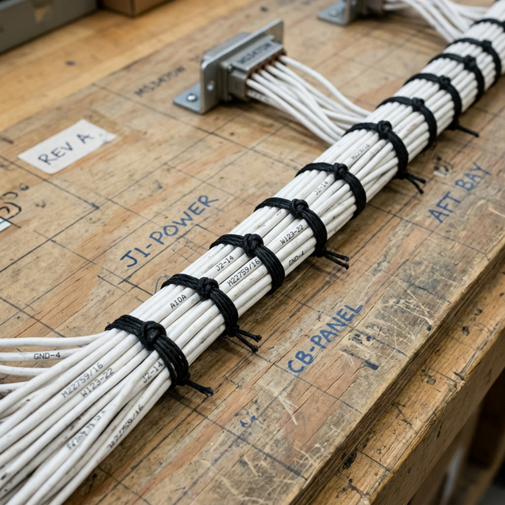

Harness fabrication basics
Module Objectives
- Explain the critical importance of comprehensively studying a wiring diagram before fabrication begins.
- List three approved methods for securing and grouping aviation wire harnesses.
- Identify securing methods that are strictly prohibited in aircraft structures.
Why Does This Matter?

A junior technician spends three hours cutting 45 wires to exact lengths, stripping the ends, crimping high-density contacts onto every wire, and painstakingly inserting them into a military-spec circular connector. Just as they click the final pin into place, the lead technician reviews the engineering print and points out that the RS-232 transmit and receive lines (Wires 14 and 15) were swapped in the schematic interpretation. Because the specialized connector contacts are non-reusable, both wires must be cut off, stripped, and re-crimped with new expensive pins — wasting hours of labor. This devastating error would have been prevented by a five-minute structured diagram review.
What You Need To Know
First Step: Master the Diagram
Aviation wiring diagrams are dense, complex engineering blueprints. Before picking up wire cutters, you must thoroughly trace and comprehend the diagram to verify:
- All logical wire runs and physical routing lengths.
- Precise connector locations and exact pin assignments (distinguishing between male pins and female sockets).
- Required wire gauges and shielding prerequisites for each individual circuit.
- Breakout points where the main trunk splits into smaller branches.
Errors caught with a highlighter on paper cost zero dollars. Errors discovered after wire is physically cut, stripped, and pinned waste immense time, ruin expensive consumables, and destroy production schedules.
Harness Securing and Binding Methods
Unlike automotive wiring which runs wildly through chassis channels, aircraft harnesses must be rigidly structured into tightly bound bundles. There are three primary approved methods for binding and securing harnesses:
- 1. MS/AN Lacing Cord: The traditional, ultra-reliable aerospace method. It utilizes approved waxed nylon or Kevlar flat cord tied in highly specific, interlocking structural knots (like the clove hitch secured by a square knot). It is prized because it adds virtually zero weight and cannot chafe adjacent bundles.
- 2. Nylon Tie Wraps (Zip Ties): Highly restricted in aviation. If used, they must be aerospace-grade (Tefzel) for high-temp environments and must have their tails cut absolutely flush using a specialized tensioning tool. A protruding, sharply cut zip-tie tail acts like a razor blade against adjacent technicians' wrists and neighboring wire bundles under vibration.
- 3. Cushioned Clamps (Adel Clamps): Rigid metal loop clamps lined with extruded synthetic rubber. These are bolted directly to the aircraft structure at rigidly specified intervals (typically every 12 to 24 inches) to support the weight of the bundle and prevent any sagging.
Prohibited Methods
In aerospace, the following are completely unauthorized for securing harnesses:
- Rubber bands (they rapidly degrade, dry-rot, and snap).
- Adhesive electrical tape (the adhesive turns to sludge under heat, leaving the bundle loose and sticky).
- Automotive split-loom tubing (vibrates rapidly, chafes insulation, and traps flammable fluids).
System Visualization
graph TD
A[Begin Harness Fabrication] --> B[Highlight Diagram Routes & Pinouts]
B --> C[Measure and Cut Wire to Length]
C --> D[Group Wires into Trunk]
D --> E{Bind the Bundle - Choose Method}
E -->|Approved Method| F[Tie Waxed Lacing Cord every 6 inches]
E -->|Approved Method| G[Install high-temp flush-cut Tie Wraps]
F --> H[Route Bundle in Aircraft]
G --> H
H --> I[Anchor Bundle to structure using Cushioned Adel Clamps]
I --> J[Install Backshells and Terminate]
style B fill:#1e40af,stroke:#1e3a8a,stroke-width:2px,color:#fff
style I fill:#166534,stroke:#14532d,stroke-width:2px,color:#fff
On The Job
Before you cut a single foot of wire, trace every single run on the master schematic with a brightly colored highlighter. Verbally verify the pin assignments. Check the gauge callouts on the drawing. When lacing the harness, ensure the knots are tight but not strangling the wires. When anchoring the bundle to the airframe, ensure the rubber cushion on the Adel clamp sits squarely against the bundle — metal-to-wire contact is a strict structural failure.
Reference Terms
Harness Fabrication First Step
Before cutting any wire when fabricating an aircraft harness, the technician must thoroughly study the wiring diagram to understand all wire runs, connector locations, pin assignments, wire gauges, and routing paths — errors caught on the diagram are free; errors discovered after cutting cost time and materials.
Harness Securing Methods
Acceptable aircraft harness securing methods: (1) approved MS/AN lacing cord (traditional military and civilian method), (2) nylon tie wraps with edge protectors where needed, (3) cushioned clamps (AdEL or equivalent) at intervals per the maintenance manual.
Wiring Diagram
The authoritative engineering blueprint documenting all circuit wire runs, exact pin assignments, required gauges, and physical routing.
Lacing Cord
Specially formulated, flat waxed cord (MS/AN spec) used to tightly bind wire bundles via structural knots without adding chafing hazards or weight.
Cushioned Clamp (Adel)
A metal loop clamp lined with synthetic rubber used to rigidly secure heavy wire bundles to the airframe geometry without damaging insulation.
Assessment Check
Spend ten minutes mastering the wiring diagram before cutting any material — and structurally secure the finished harness using solely approved lacing cord, flush tie wraps, and rubber-cushioned Adel clamps. --- ---